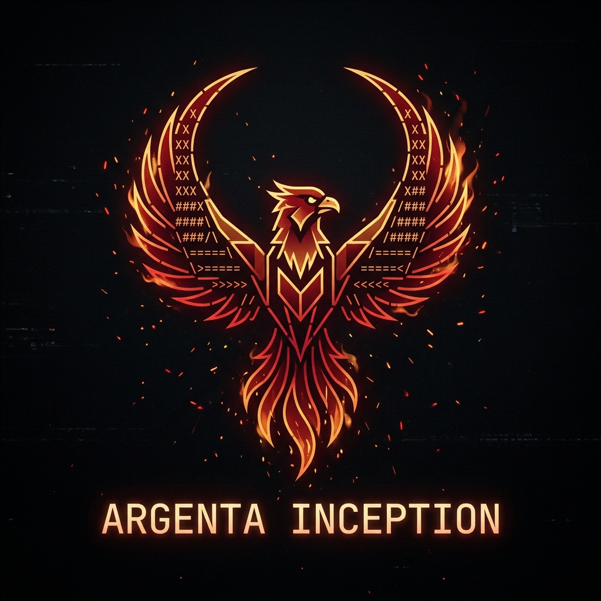

Rabelus Lab · Core Interface

Argenta-Tui
Terminal Multi-Agêntico do Rabelus Lab.
Um fork do OpenCode com identidade própria, soluções proprietárias e integração direta com o núcleo operacional do ecossistema Rabelus Lab.
O Argenta-Tui reconhece com orgulho sua origem no OpenCode e segue uma trilha própria de branding, operação e integração ecossistêmica.